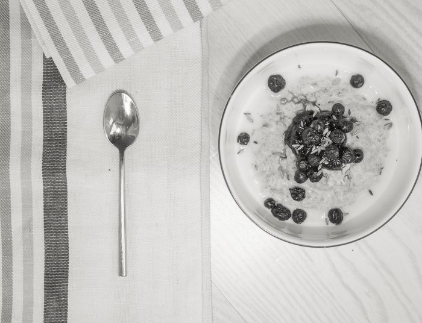

Living
The Art of Brakfast Bowl
7 January 2017 / by Irina Lakicevic



Within the category of early morning rituals, the custom of a ‘breakfast bowl’ may not have quite the obvious roots as traditions would dictate, albeit it is that exact lack of the customary that extends breakfast bowl a certain autonomy in the world of pre-established repasts -making it a thus-more tantalizing choice.
An epicurean might disregard the notion of excitement in favour of something more elaborate, however as the first meal of the day is habitually reserved for a simple, swiftly prepared and hastily eaten morsel, there is a certain amount of self-indulgent frivolity in taking time to prepare a satisfying bowl laden with goodness.
The cult-like admiration which the ‘brekkie bowl’ has gained through social media and beyond is a testament to it’s greatness. One must bear in mind though that the expenditure of effort is directly related to the final outcome. Even the simplest of bowls require some degree of consideration before one begins their venture. In this case time invested is most definitely time well spent. The traditional Scottish breakfast of a sturdy oatmeal is perhaps the least arduous option, simply served with a pinch of salt and a splash of cold milk on top. For those who are less pragmatic, a gilded version topped with fruits, nuts and a spoonful of raw honey for sweetness might just be the thing.
A personal house favourite is more of a new-age invention. A spirulina or matcha bowl, creamy and cold, serves a healthy backdrop for a number of super-food toppings and with added granola offers a delicious crunchy texture. Who doesn’t want healthy ice-cream for breakfast?
‘…THERE IS A CERTAIN AMAOUNT OF SELF INDULGENT FRIVOLITY IN TAKING TIME TO PREPARE A STATISFYING BOWL LADEN WITH GOODNESS.’
Another winner on social media with a pedigree of long-lasting tradition is the chia bowl. Itsy-bits seeds soaked overnight (if one makes the effort of remembering) account for a pudding- like texture that can be adapted to suit even the most delicate of palates. Boasting a higher amount of Omega-3 than that found in salmon means chia pudding is certainly the healthiest of choices.
If you are more of a savory – type then a hearty Middle Eastern bean-stew with a side of the highly addictive za’tar makes for a great meal to keep you full even past lunch. Quinoa, avocado and eggs are also favourable alternatives, served with a side of parsley for the most minimalistic of bowls.
The prize is worth the effort if the tastebuds can adapt to the new burst of flavours during the early morning hours and as one can see, when it comes to the breakfast bowl choices are as many as there are makers. It is both the freedom of choice and the triumphant glory one feels in succeeding in creating something so beautifully edible that makes the dish so satisfying. If one is out of ideas the internet is always a great source of inspiration and only a finger-click away.